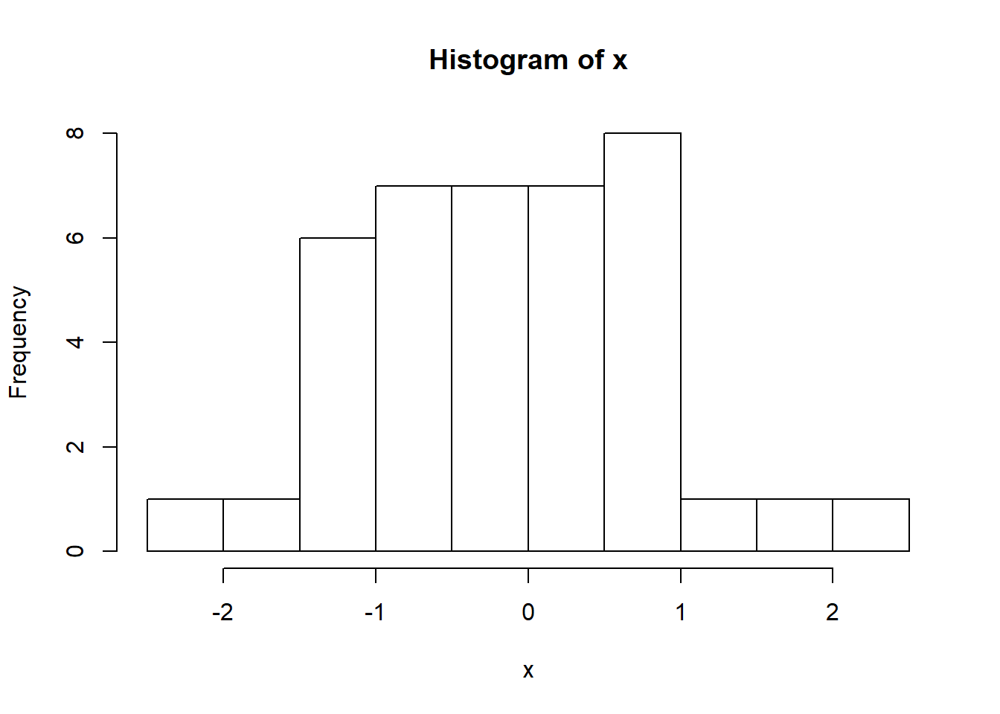
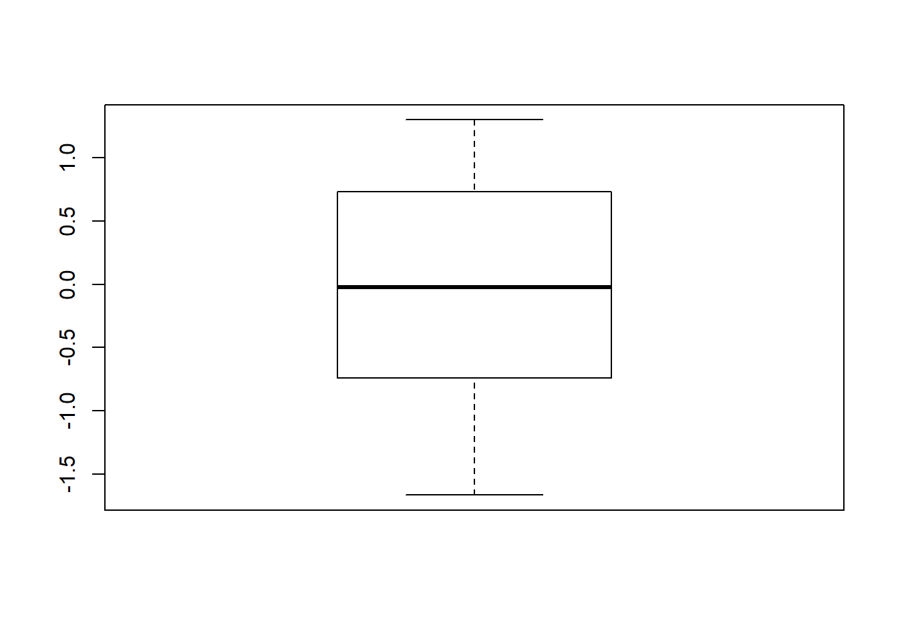
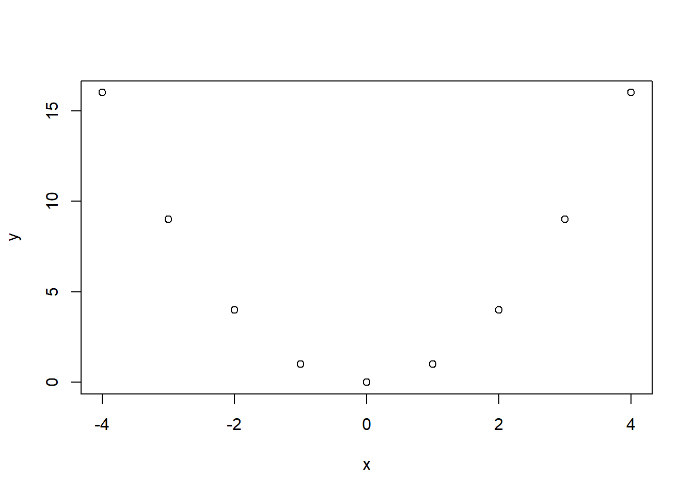
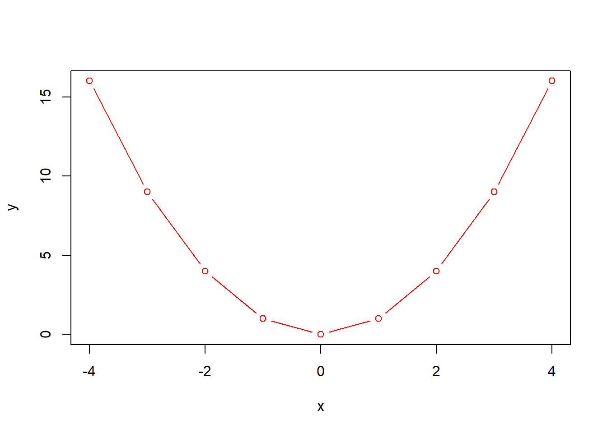

Sección 3 Funciones y comandos básicos
En R se puede ejecutar cualquier operación matemática. Comencemos viendo algunas operaciones básicas:
Suma:
5+2## [1] 7Raíz cuadrada:
sqrt(15)## [1] 3.8729833.1 Ayuda
R incluye documentación de ayuda muy detallada. Para acceder a la ayuda de cada función, objeto o datos de prueba se debe ejecutar el comando help() o ?. Por ejemplo help(sqrt), o ?sqrt. Otra forma de pedir la ayuda es presionando F1 luego de seleccionar la función. La sentencia ?? busca un patrón dentro de la documentación del sistema de ayuda, es útil si no se conoce cual función ejecuta cierto análisis. Otra herramienta muy útil para buscar ayuda es Google o Stack Overflow.
help(sqrt)
??square3.2 Asignaciones y aritmética vectorial
Como ya se especificó en la sección 2.1, un comando de asignación es <-, donde a la izquierda se especifica el nombre del objeto y a la derecha el valor, ya sean resultados de un cálculo o de un análisis estadístico. Por ejemplo, si se desea asignar el valor de 5 al objeto radio se debe ejecutar radio <- 5. Otras formas de hacer asignaciones es mediante la utilización de = o ->, este último no es utilizado comúnmente.
Asignaremos al objeto x una secuencia numérica del 1 al 5 y luego ver el contenido de x:
x<-c(1,2,3,4,5) #No se muestra el resultado
x #Se auto imprime el resultado
## [1] 1 2 3 4 5
print(x) #Imprime el resultado de manera explícita mediante el comando print
## [1] 1 2 3 4 53.3 R como herramienta estadística
En el paquete stats (uno de los paquetes instalados por defecto) contiene la densidad, la función de distribución (probabilidades), función de cuantiles y generación de números aleatorios de las distribuciones estadísticas más comunes. Por ejemplo, si se desea generar 40 números aleatorios de una distribución normal estándar se deberá ejecutar la sentencia rnorm(40).
Si se desea calcular medidas descriptivas básicas de un vector se puede ejecutar mean para calcular la media, sd para calcular el desvío estándar y var para la varianza. Otra función útil para obtener valores de posición y dispersión es la función summary.
x<- rnorm(40)
summary(x)## Min. 1st Qu. Median Mean 3rd Qu. Max.
## -1.66647 -0.74200 -0.02098 -0.05684 0.72991 1.300363.4 R como herramienta gráfica
Con R se puede realizar gráficos y modificar numerosos parámetros del gráfico para su publicación. Se realizará un histograma y un boxplot de la variable x generada anteriormente.
hist(x)
boxplot(x)
También se puede realizar gráficos de dispersión utilizando la función plot y editar algunos elementos del gráfico.
x <- c(-4,-3,-2,-1,0,1,2,3,4) # Observar que se remplazó el objeto "x" que se generó previamente
y <- x^2
plot(x,y)
plot(x,y, type="b", col="red")
3.5 Tablas resumen de operadores y funciones
| Sintaxis | Operación |
|---|---|
x + y |
suma de x e y |
x - y |
diferencia de x e y |
x * y |
multiplicación de x e y |
x / y |
división de x por y |
x %/% y |
parte entera de la división de x por y |
x %% y |
resto de la división de x por y |
x ^ y |
x elevado a y-ésima potencia |
x < y |
x menor que y |
x <= y |
x menor o igual que y |
x > y |
x mayor que y |
x >= y |
x mayor o igual que y |
x == y |
x igual a y |
x != y |
x no es igual a y |
sqrt(x) |
raíz cuadrada de x |
exp(y) |
exponencial de y |
log(x) |
logaritmo natural de x |
log(x, k) |
logaritmo base k de x |
sum(x) |
suma los elementos de x |
prod(x) |
producto de los elementos de x |
round(x, k) |
redondea x a k dígitos |
Ejercitación
-
Funciones y comandos básicos
Calcule la raiz cuadrada de 10
Calcule el perimetro del círculo de radio 5 (\(P = 2\pi \times r\))
Calcule 270 dividido la suma entre 12 y 78
Calcule el cuadrado de 8
Calcule el logaritmo de 10
-
Asignaciones y aritmética vectorial
Calcule el perímetro del círculo de radio 5 y guárdelo en el objeto
per.Crear el vector de coordenadas 6,7,8,9,10 y llamarlo
zSuma de dos vectoresCalcular la suma de
zyxCalcular el doble de
x¿Qué se obtiene haciendo el producto entre los vectores
zyx? -
R como herramienta gráfica
Generar un vector
ycon 20 realizaciones de una normal con media 5 y desvío estándar 2. Calcular la media y la varianza dey.